QuickFolders.org
| QuickFolders Home About Menu On Top Support MenuOnTop! MenuOnTop Change Log |
Menu On Top
Have a look at the quick tutorial here: How to install Menu On Top
This is a small extension which makes it possible for Windows users to move the Thunderbird menu above the tabs, like it used to be in Thunderbird 10. The main reason is usability; it is inspired by the excellent Thunderbird themes of Alfred Kayser. Please be sure to try them out!
Table of Contents
Downloads
Where is my menu bar?
Preferences
Style Configuration
Custom Menu
Themes
Contributions
Version History
Feedback / contact me

As you may notice on this screen shot, it uses the coloring of your Operating System's theme engine to display the caption + menu area. This means you can use the addon with UI stylers such as Windowblinds - the screenshot shows the UIS2 theme 'Lantana'. It also means I had to add the possibility of making the menus more visible by styling the menu text background. Note that any toolbar buttons do not have backgrounds as it looks much nicer. You can move buttons that you need all the time (e.g. get Mail) to the top which adds some more usability.
Downloads and Source
Menu On Top can be downloaded here. The code is based on the addon Rise of the Tools.
Where is my Menu bar?
Of course to enjoy the "Old school" menus on top, you might have to make the menu toolbar visible; if the menu isn't there at all, simply select from the menu button:
Options... ► Menu Bar
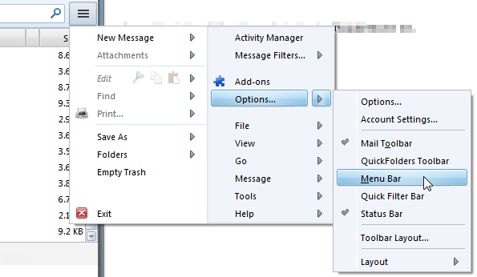
Style Preferences
The addon is restartless and has a quite a few options; either click the toolbar / status bar icon
 , or
click on Tools ► Addons ► Extensions and click the Options button of Menu on Top:
, or
click on Tools ► Addons ► Extensions and click the Options button of Menu on Top:
Style Configuration
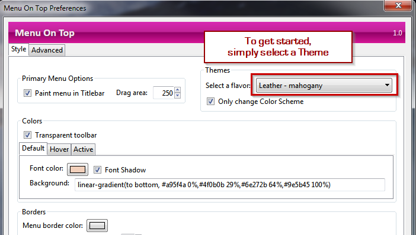
To get started, select a Theme from the dropdown. You can then tweak various things in the dialog - all changes are visible immediately. Use the Only Change color Scheme option once you are happy with the way it looks and only want to try different colors.
- Paint menu in titlebar - this is a space saver and paints
the menu "up there" - in Thunderbird you can only drag the window at the top where there is no menu,
therefore I added the Drag area at the right. It can also be used to restrict the
search box to a reasonable size if you add it to the menu toolbar:
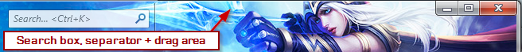 - flavor dropdown: supports the most important Thunderbird themes. My favorites are Nautipolis and Walnut 2 by Alfred Kayser and TT Deepdark. by Stefano Rosselli
- Only change color scheme Use this to change colors without affecting any other style settings, such as menu height.
- Colors - various choices for the menu background + font colors. Note that some themes may ignore the Hover and Active background colors.
- Font color: enter a valid css color. This is only applied to the top level menu items.
- background: enter a valid css background or backgrund color. For transparency, use the rgba() function. linear-gradient is also supported. Leave this string empty for setting a transparent background.
- Borders - style for border colors, width and roundness of corners. Use width=0 to hide the borders.
- Spacing
- Negative toolbar margin: pulls the toolbar closer to the top of the window. Depending on your OS theme this might truncate the menu items so do not choose a value that is too high. I recommend between 3 and 16 pixels.
- Menu panel top margin: Space between menu and top of toolbar. This may be needed for alignment if you add toolbar buttons to the menu bar.
- Menu panel left margin: Space between menu and left of window.
- Maximum menu item height: Affects height of the menu items. Depending on the theme you are using you might want a tall or low menu bar
- Button Icons - use this to force big / small icons for any toolbar buttons that you move to the menu bar
Custom Menu / Avatar
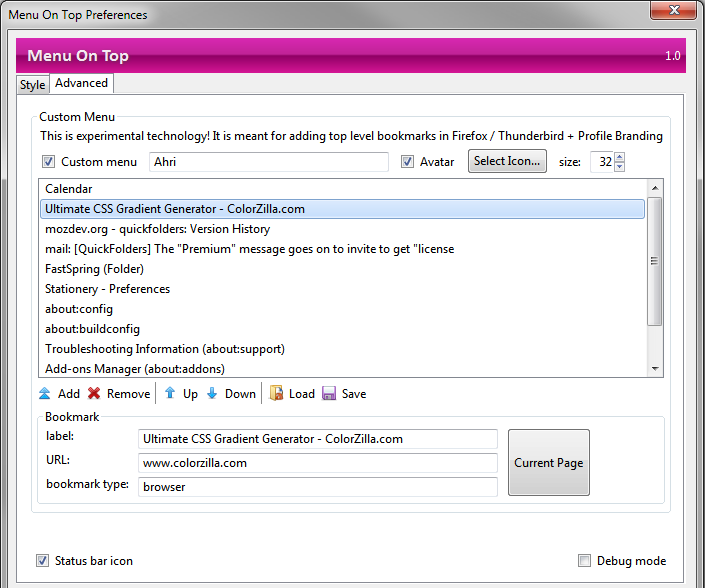
Enable the Custom Menu in order to add bookmarks and an Avatar if you like. The supplied icons for avatars are 32px * 32px - I highly recommend setting the size to 32 or higher.
The list ion the custom menu is looking at your current tab content, so if you click the Current Page button it may add a web page or the currently viewed email, depending on what you are viewing. Note that you can also add a bookmark to the menu by clicking and chosing Add Current Item at the bottom of the menu.
Tool buttons - these affect the items in the bookmarks list
- Add: added the currently edited bookmark to the menu
- Remove: deletes the currently selected item from the menu
- Up: Moves the currently selected menuitem up by one position
- Down: Moves the currently selected menuitem down by one position
- Save / Load: Menu On Top does this automatically, so these buttons might be removed, or rewritten to import/export.
Bookmark - each menu item has 3 attributes:
- label: this is what is displayed on the menu. When you add a new item via the menu, you get a chance to edit this. To change it, edit this textbox and click on another item (e.g. URL)
- URL: this is the "address" of the web page or email; only edit if you know what you are doing!
- type: currently it is one of the following - {browser, contentTab.about, message, calendar, folder, addon}. The first two are supported by Firefox + Thunderbird; the other ones are specific to Thunderbird. contentTab.about can be used to bookmark any "about:" URL, such as about:config. addon is specific to certain addons which support editing their settings in a tab. Currently supported are Stationery and ThunderStats. calendar is a Lightning Tab.message is a URL for an email. Clicking the email link will jump to the mail, holding down CTRL will open the email in a new single message tab.
Icons shipped with Menu On Top
Currently the Icons are packed within the Add-on; in older versions of Thunderbird / Firefox they used to be unpacked automatically. Unfortunateley this has to be done manually at the moment.
To unpack the icons, download a copy of the Addon (e.g. menu_on_top_supermenu_avatar-1.10-tb.xpi) and then rename it with an extension of "zip", (e.g. menu_on_top_supermenu_avatar.zip). Essentially all Add-ons are packed the same way as windows archives (zip files) - if you have IzArc installed you can unpack it directly with a right-click command. Then copy the avatars folder to a location of your choice. This contains all the icons that are shown in the "themes" seection below. Icons can be any size, but I have found 32px * 32px works quite well.
Theme Support
Menu on Top supports a variety of themes; click the images to download the themes at addons.mozilla.org:
Avatar Themes
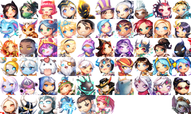
League of Legend Chibis, all created from the amazing artwork by justduet.tumblr, except for tristana which is by Skence. If you are missing your favorite champion and have a suitable chibi, please send me an email with a link.
The new "Custom Menu" can be used to personalize your Thunderbird / Firefox profile with an icon (recommended 32px). I added some "Chibi" characters from the games League of Legends and Borderlands 2 to get started. Here are a few examples using different colot choices some of these use lightweight themes with matching characters.
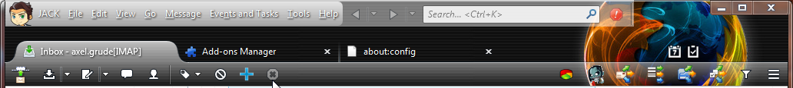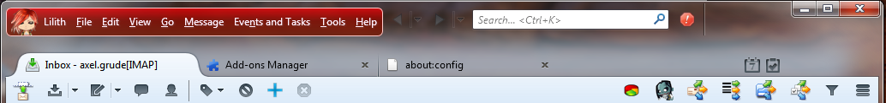
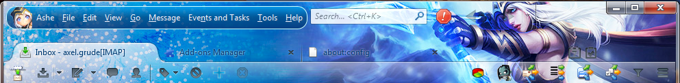
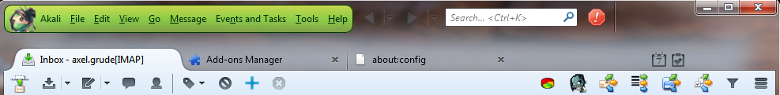
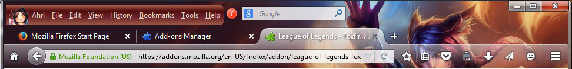
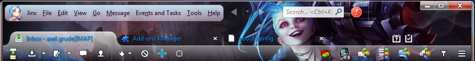
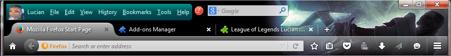
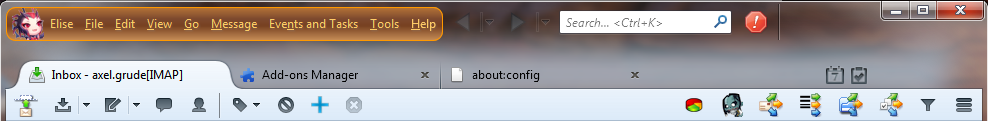
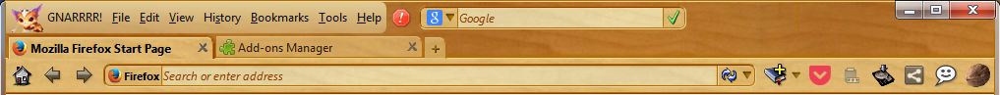
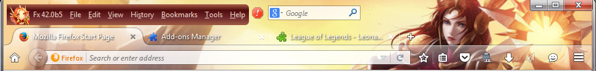
This top left menu can be named anything and can be used to bookmark emails (Tb) and various tabs, such as Calendar, about:config, Stationery Options or any web page. This is also handy for quickly accessing the most used web pages in Firefox (such as intranet projects) when we do not want to display the personal bookmarks toolbar or sidebar all the time.
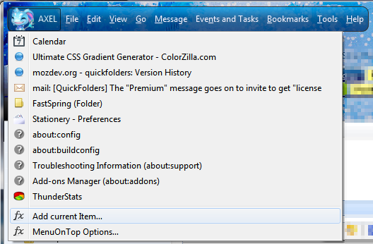Default Theme - Australis
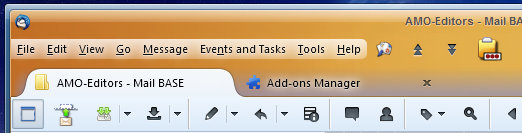
Charamel
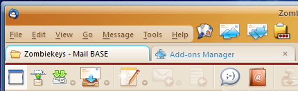
Nautipolis
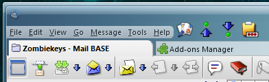
Nuvola TB
small icons, with tabs in titlebar enabled:
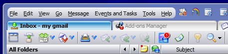
large icons, with with clean titlebar:
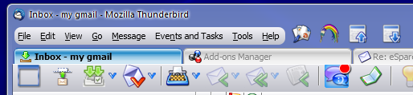
TT deepdark

Walnut 2
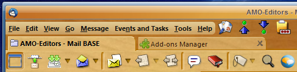
Littlebird (with small icons)
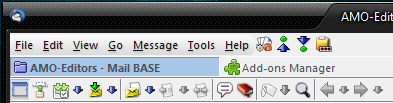
Noia Fox
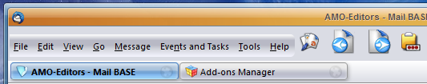
Noia eXtreme
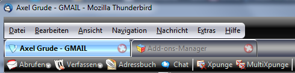
Contribute
If you find Menu On Top useful, I would happily accept your contribution to the tip jar:
Version Details
Version history has moved here.